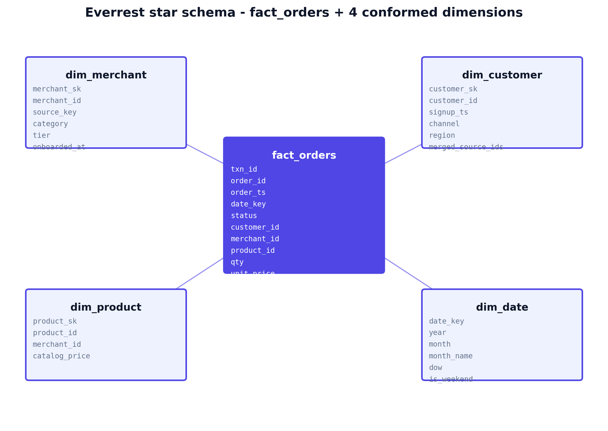
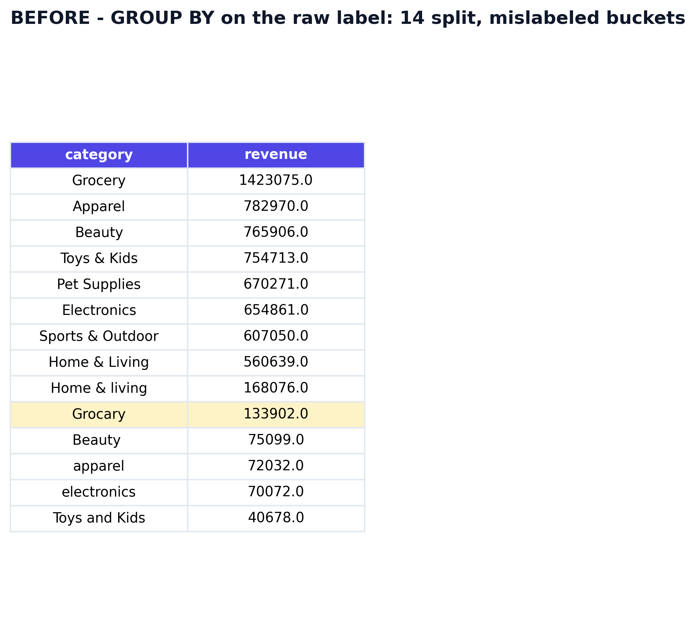
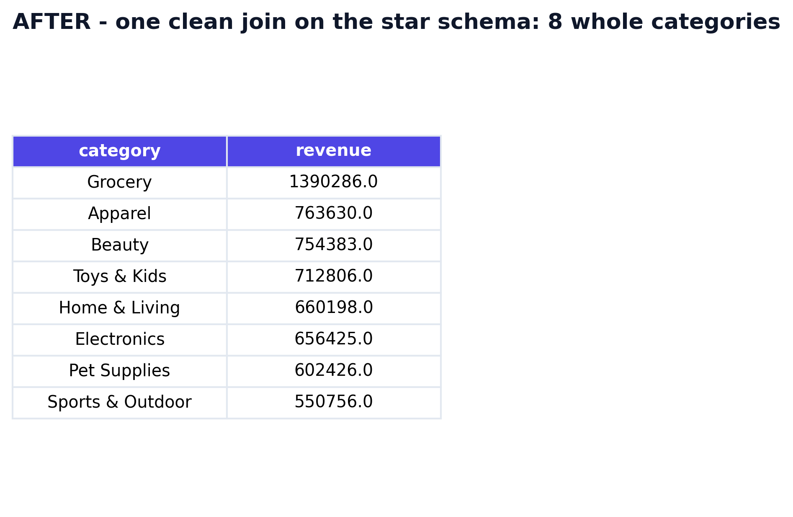
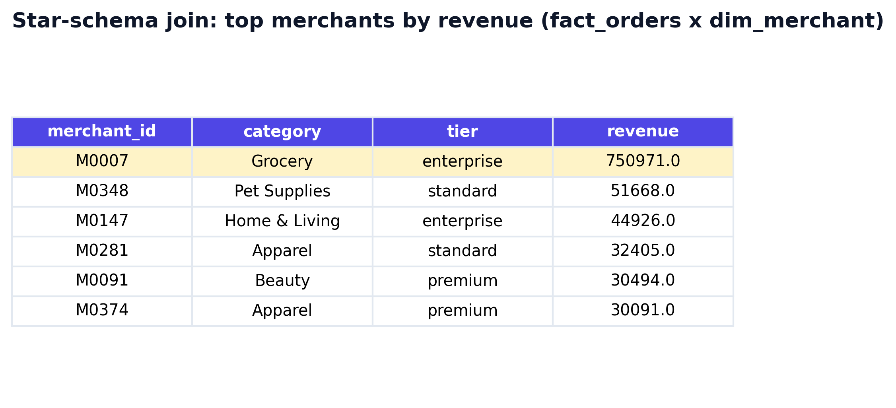
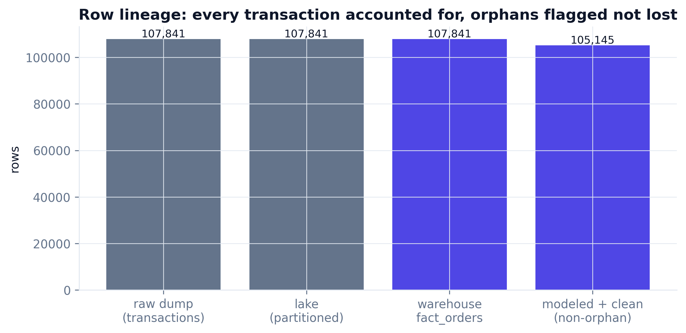
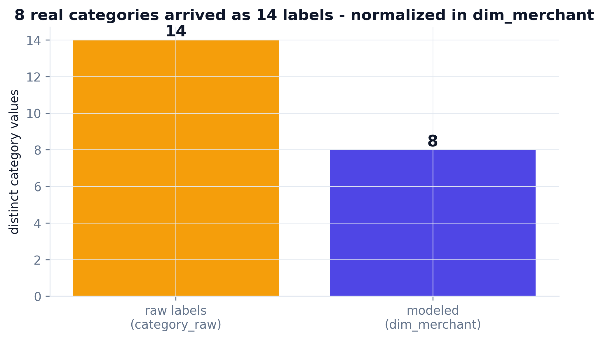
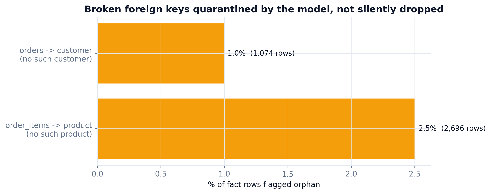
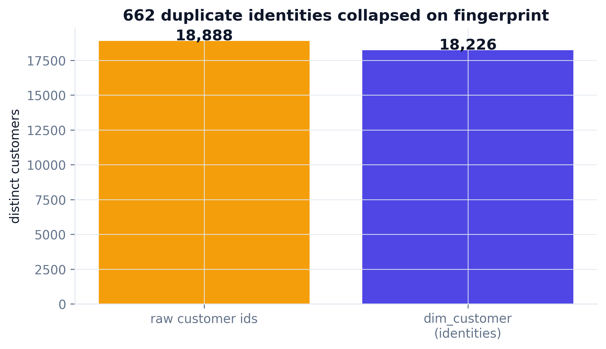
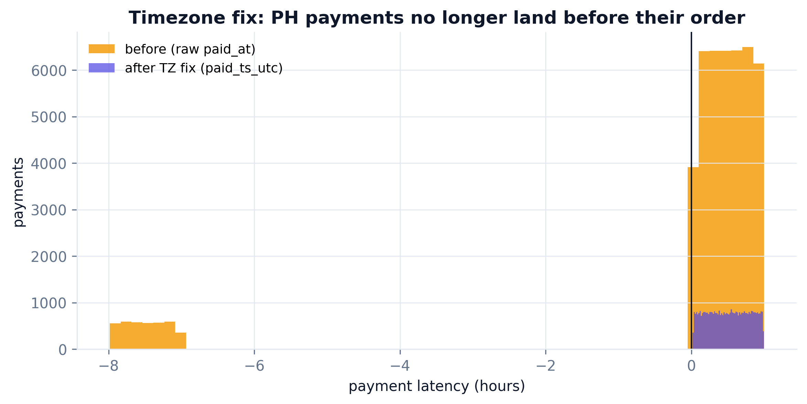
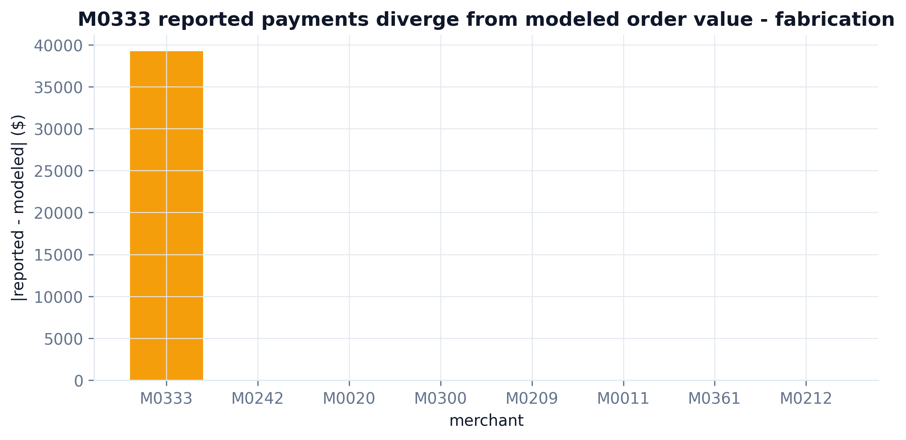

The layer everyone fakes with a tidy ERD of already-clean data. This one starts from a real operational mess - four source systems, mismatched keys, dirty labels - and ends at a DuckDB star schema you can actually query. Every number below came from a real build: seed 42, learn-python env, 107,841 raw transactions modeled.
A real data platform is not handed clean tables - it is handed exports from whatever systems happened to produce them. Everrest arrives as four raw dumps with their own key formats, their own casing, and their own defects. The job: turn this into one warehouse the whole company can trust and query.
The quirks are ingestion problems, so they live in the raw dump - which is exactly why the warehouse build has real work to do. A seeded generator produces the four sources; each defect is documented in its docstring, turning Step 5 into a recall test: did the model resolve everything the raw layer broke?
# Quirk 3: the merchant master uses a different key format than transactions. ext["merchant_key"] = ext.merchant_id.str.replace("M", "MER-") # M0001 -> MER-0001 # Quirk 4: PH payments logged in local time -> paid_at lands 8h BEFORE the order. pay.loc[ph, "paid_at"] = pay.loc[ph, "paid_at"] - pd.Timedelta(hours=8) # Quirk 6: 800 customers cloned under a new id, identical signup/channel/region. clones = customers.sample(800, random_state=SEED).copy() clones["customer_id"] = [f"C9{i:05d}" for i in range(1, len(clones) + 1)]
Anyone can draw an ERD. The real question an infrastructure lead has to answer is whether the platform can be built on at all.
Before writing DDL, assemble the tools that serve this objective: an engine that queries files directly, a contract library that turns integrity rules into code, and a promotion path to permanent CI gates.
Query CSV/JSON/Parquet directly and build the star schema in-process - the whole warehouse is one SQL file, zero infrastructure.
Schema + referential-integrity assertions as code - "product_id must exist in dim_product" becomes a test the build enforces.
Promotes the data contract to a permanent CI gate - the orphan keys and dirty labels never ship twice.
Catalog + lineage: register the dims and fact so downstream teams discover the modeled tables, not the raw dump.
One fact at a clear grain + conformed dimensions - the model that makes every downstream query a simple join.
One anomaly color (amber) across every reconciliation chart; row counts always shown so nothing hides.
One SQL file does the whole transform: stage the four sources, reconcile the keys, normalize the labels, dedupe identities, fix the timezone, then assemble one fact and four conformed dimensions. Grab the real code below.

One fact at a clear grain (one order line) surrounded by four conformed dimensions. Every downstream question is now a simple join instead of a wrangling exercise.
-- Quirk 3: reconcile 'MER-0001' -> 'M0001' via legacy_id. -- Quirk 2: normalize 14 dirty labels -> 8 canonical categories. CREATE OR REPLACE TABLE dim_merchant AS SELECT legacy_id AS merchant_id, clean_category(category) AS category, tier FROM stg_merchants; -- Quirk 6: collapse duplicate identities on a (signup, channel, region) fingerprint. SELECT min(customer_id) OVER (PARTITION BY signup_ts, channel, region) AS customer_id -- Fact: orphan keys are FLAGGED, not silently dropped. (dp.product_id IS NULL) AS is_orphan_product
The whole point of modeling. On the raw dump, "revenue by category" splits into 14 mislabeled buckets. On the star schema, one clean join returns 8 whole categories.



A real star-schema join (fact_orders x dim_merchant): top merchants by revenue - and the M0007 bulk-wholesale outlier surfaces immediately, correctly attributed.






product_id: foreign_key: dim_product.product_id # enforced for non-orphan rows checks: - name: referential_integrity_product rule: "every non-orphan row has product_id in dim_product" - name: no_negative_payment_latency rule: "paid_ts_utc >= order_ts for all rows" - name: category_domain rule: "dim_merchant.category in the 8 canonical categories" # build result: contract PASS - 0 referential-integrity violations
| Planted defect (in raw) | Resolved by | Result | Status |
|---|---|---|---|
| Orphan foreign keys | fact flags + contract | 2,696 + 1,074 rows quarantined | ✓ resolved |
| Dirty category labels | clean_category() in dim_merchant | 14 → 8 categories | ✓ resolved |
| Heterogeneous merchant keys | legacy_id reconciliation | MER-#### → M#### | ✓ resolved |
| Timezone bug (PH) | +8h shift in clean_payments | 0 negative latencies | ✓ resolved |
| Round-number fabrication | reported vs modeled reconciliation | M0333 flagged | ✓ resolved |
| Duplicate identities | fingerprint dedup in dim_customer | 662 collapsed | ✓ resolved |
A panel of five senior reviewer agents - each with 10+ years in data engineering, architecture, and business - tore into the naive first pass (naive_query.py, kept in the repo) that just queried the raw dump. It ran clean and returned plausible numbers, which is what made it dangerous. Every fix below is in the warehouse above.
"You queried the raw dump directly and joined merchant on merchant_id. The master uses MER-0001 keys - your join matched zero rows and you never noticed. Model conformed dimensions with a reconciled key."
"No referential-integrity check at all. 2.5% of line items point at products that do not exist - they vanish into a join and skew every total."
"Revenue-by-category on the raw label gives you 'Beauty' twice and a 'Grocary'. Every rollup is silently split until you normalize on ingest."
"Even if you fix it once, nothing stops it regressing. Where is the contract? And PH payments dated before their order should have failed a check immediately."
"Your naive total counts a fabricated merchant and duplicate customers. That number goes to the board and it is wrong."
-- v1 (before): query the raw dump, join on merchant_id SELECT count(*) FROM t JOIN m ON t.merchant_id = m.merchant_key; -- -> 0 rows. MER-0001 never equals M0001. Silent, catastrophic. -- v2 (after): reconcile the key in dim_merchant, then join the star SELECT dm.category, sum(f.net_amount) FROM fact_orders f JOIN dim_merchant dm USING (merchant_id); -- every row resolves
Install once, then point it at your raw exports - the same 6 steps build a star schema and a contract on your data (step 2 is skipped when real data exists).
git clone https://github.com/phoebefu6/phoebe-data-skills.git ln -s "$PWD/phoebe-data-skills/skills/how-to-schema-and-warehouse" ~/.claude/skills/